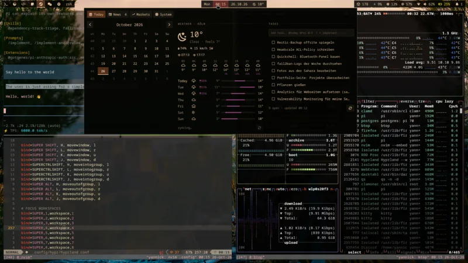
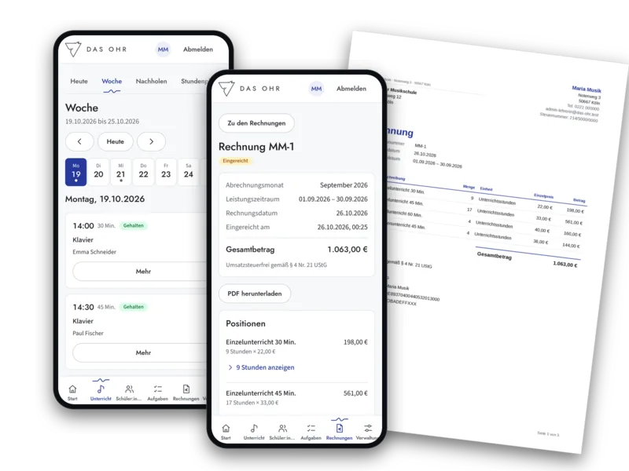
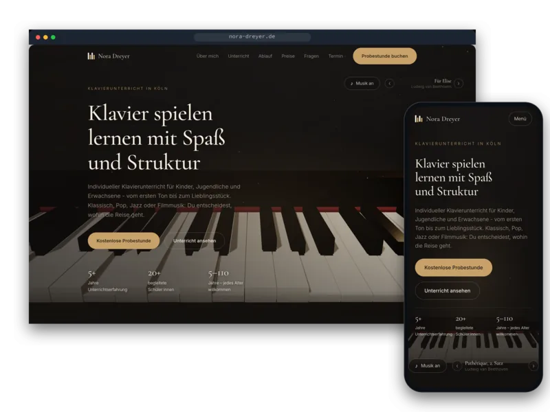
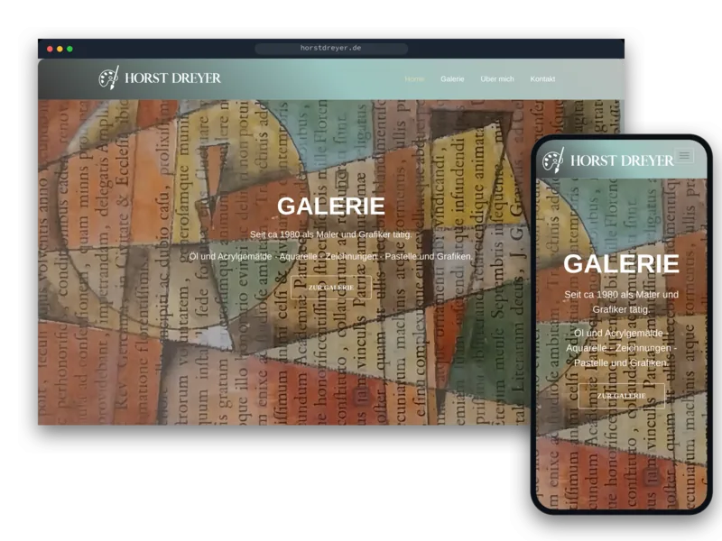
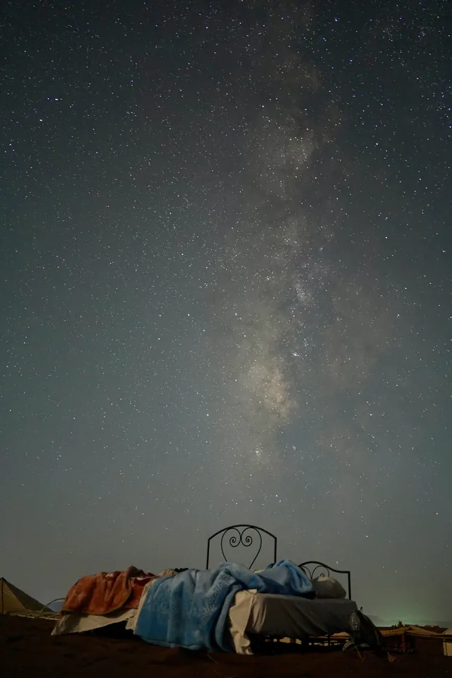
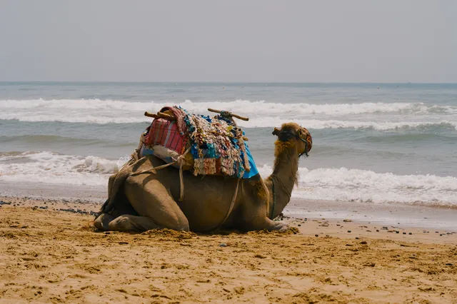

Secure E-Mail & Groupware
I lead groupios, a multi-tenant mail gateway and groupware platform, on-prem and SaaS.
- Haraka
- Rspamd
- Keycloak
- SPF/DKIM/DMARC
- DANE
- Kopano
- CipherMail
- OpenLDAP
What I actually do day to day, not every tool I have touched once.
I lead groupios, a multi-tenant mail gateway and groupware platform, on-prem and SaaS.
SIEM and SBOM-based vulnerability tracking for the whole fleet, CVE triage and incident response.
I own the development process: templates, branching, mandatory reviews, and CI/CD that enforces it.
The self-hosted company IT at Tuxguard and step3IT: Git, registry, chat, files, SSO and monitoring.
Backend APIs, web UIs, desktop clients and licensing systems, mostly in Python and Go.
Research on adversarial ML: backdoors in generative models and DGA classifiers that IDNs can evade.
Languages: German (native) · English · French · Spanish
Things I build in my spare time. Most of them run in production on my own server or in my home lab.

My own desktop shell on top of Hyprland, about 7,000 lines of QML.
Open-weight LLMs on my own GPU box. Private prompts and documents never leave my network.

A mobile-first PWA that replaced a music school's Excel sheets.

A one-pager for a piano teacher in Köln, with a three.js piano scene.

A gallery of a painter's oil and acrylic paintings, watercolours and drawings.
One VPS is the only way in. Everything else lives at home, behind WireGuard.
Swipe to see the whole diagram →
How a photo from my phone gets backed up
media.sautter.dev.Fine-tuning EuroBERT to catch spam and phishing in European languages, not just English.
Small tools that take care of everyday chores for me.
A Home Assistant app moves the motion clips from my cameras' SD cards to my NAS.
Home Assistant · PythonWatches the Köln city office calendar and sends a Telegram alert when an earlier slot opens.
Playwright · Telegram APIScrapes new classified ads every day; an LLM checks the photos for what I'm looking for.
Firecrawl · LLMsWe show that internationalized domain names let DGAs evade state-of-the-art classifiers about 98% of the time, and we propose a language-balanced training procedure to counter this.
DOI CodeA transformer-based DGA classifier that outperforms the state of the art in a bias-reduced setting: +11.23% ROC AUC for FPR ≤ 0.01 and +13.98% TPR at an FPR of 0.0014.
DOI CodeExtends backdoor attacks from classifiers to autoencoders and GANs. A hidden trigger makes the model produce attacker-chosen output while it keeps behaving normally otherwise.
arXiv
